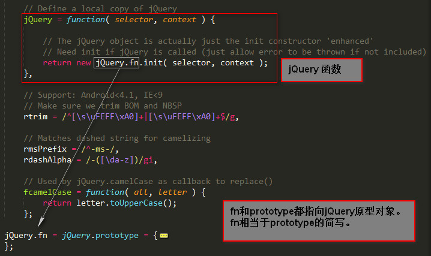
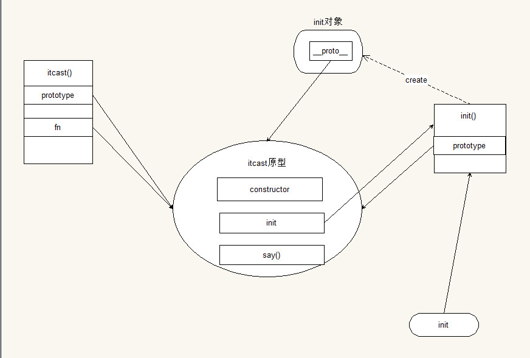
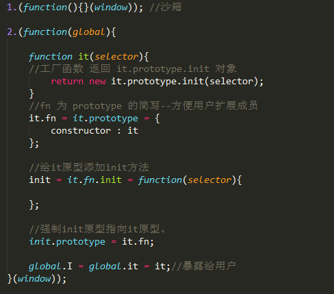

jQuery
j - js
query - 查询
含义：1.查询 2.操作
分析
沙箱包裹
自定义
fn为prototype的简写形式。- 目的：方便用户在原型上扩展成员。

- 目的：方便用户在原型上扩展成员。
用户传入值可能有：DOM元素 DOM数组 元素
框架结构简介

外围包裹
11.(function(){}(window)); //沙箱主分支
123456789101112131415162.(function(global){function it(selector){//工厂函数 返回 it.prototype.init 对象return new it.prototype.init(selector);}//fn 为 prototype 的简写--方便用户扩展成员it.fn = it.prototype = {constructor : it};//给it原型添加init方法init = it.fn.init = function(selector){};//强制init原型指向it原型。init.prototype = it.fn;global.I = global.it = it;//暴露给用户}(window));
完善
分析
用户可能会传入的
selector类型有
- 无效值 \
\ - string
- 选择器 <根据选择器获取相应的dom元素，并放到it对象上，以伪数组的结构来存储>
- html字符串 <根据html字符串创建对应的dom元素，并放到it对象上，以伪数组的结构来存储>
- dom元素 \
- dom数组 <放到it对象上，以伪数组的结构存储>
- function <首先以DOMContentLoaded事件做处理，如果支持该事件，就给此事件绑定事件处理函数，在事件处理函数内，执行传入的函数。如果不支持，那么就用onreadystatechange事件来处理。不兼容IE8以下。>
完善init
|
|
- 类型判断123456789101112131415161718192021222324252627282930313233it.extend({isString: function(obj) {return !!obj && typeof obj === 'string';},isHTML: function(obj) {obj = it.trim(obj);return !!obj && obj.charAt(0) === '<' && obj.charAt(obj.length - 1) === '>' &&obj.length >= 3;},isFunction: function(obj) {return !!obj && typeof obj === 'function';},isDOM: function(obj) {return !!obj && !!obj.nodeType;},isArrayLike: function(obj) {// 过滤基本数据类型 以及 无效值（null undefined）if (!obj || typeof obj !== 'object') {return false;}// 过滤函数和globalif (it.isFunction(obj) || it.isGlobal(obj)) {return false;}var type = obj instanceof Array ? 'array' : 'object',length = 'length' in obj && obj.length;return type === 'array' || length === 0 ||typeof length === 'number' && length > 0 && (length - 1) in obj;},isGlobal: function(obj) {return !!obj && obj.window === obj;}});
工具类 自己用别人也可以用 功能类 只允许自己用
工具类方法(添加到函数本身，所有外部可调用)
|
|
DOM方法实现
|
|
属性方法实现
|
|
css方法实现
使用方式
- css(‘width’)
- css(‘width’,’100px’)
- css({width:’100px’,height:’100px’})
形式
1234567891011121314151617181920212223242526272829303132333435363738itcast.fn.extend({css: function(name, value) {// 1: 只给name传参if (value == undefined) {// a: 类型为对象: 给每一个dom元素同时设置多个样式if (typeof name === 'object') {return this.each(function(elem) {for (var k in name) {elem.style[k] = name[k];}});} else { // b: 类型为字符串return this.get(0) ?(global.getComputedStyle ?global.getComputedStyle(this.get(0))[name] :this.get(0).currentStyle[name]) :null;}} else { // 2: 给name和value都传参return this.each(function(elem) {elem.style[name] = value;});}},addClass: function(className) {return this.each(function(elem) {if ((' ' + elem.className + ' ').indexOf(' ' + className + ' ') === -1) {elem.className = itcast.trim(elem.className + ' ' + className);}});},removeClass: function(className) {return this.each(function(elem) {elem.className = itcast.trim((' ' + elem.className + ' ').replace(' ' + className + ' ', ' '));});}});
addClass 方法实现
思路：首先判断是否已经存在className、然后判断是否有重复的className，再添加12345678$.fn.addClass = function(className){ return this.each(function(elem){ if((' ' + elem.className + ' ').indexOf(' ' +className + ' ') === -1){ elem.className = it.trim(elem.className + ' ' +className); } });};
removeClass方法的实现
思路：将要去除的className替换成空格 并且 trim去除收尾空格12345$.fn.removeClass = function(className){ return each(function(elem){ elem.className = it.trim(' ' + elem.className + ' ').replace(' ' +className + ' ',' '); })
hasClass方法实现
|
|
toggleClass方法实现
|
|
##总结：
attr的功能:获取属性节点 、设置属性节点 。
- 判断用户传入参数个数 ：
- 一个参数是获取
name值value为空 - 传入两个参数时 遍历
it获得每个dom值 改变其name和value
注意：我们把attr当作一个标签来做 无法获取动态属性
- 一个参数是获取
prop把每个dom元素当作dom对象来做 会实时改变属性
注意：自带弊端：需要对特殊字符name有操作, 例如colspan驼峰命名成cloSpan才可以使用方法html相当于prop的一个快捷使用方式 ，作用是获取和设置属性。 默认获取第一个dom元素的innerHTML。
属性 如果传参了 赋值为指定的字符串 属性支持与否的判断textContent和innerText（text会获取元素后代中所有的dom节点 拼接到一个字符串 返回）css
- 传一个值的情况
- 字符串 getComputedStyle(是一个方法)/currentStyle（是一个属性）返回对象
- getComputedStyle(this.get(0))[name]
- this.get(0).currentStyle[name]
- object
- 遍历赋值
- 字符串 getComputedStyle(是一个方法)/currentStyle（是一个属性）返回对象
- 传两个值的情况
事件绑定方法
attachEventaddEventListener的区别
- type
- attachEvent：’on’+ eventName
- addEventListener： eventName
- 参数个数不同
- 在绑定多个时间处理程序，执行顺序不同
- 版本支持
- attachEvent -> IE10 及以下的标准
- addEventListener W3C标准 IE8及以下不支持
removeEventListener
|
|
注意：
点击事件 和 处理程序 一一对应
点击事件
给获取到的dom节点绑定点击事件
参数:事件处理函数